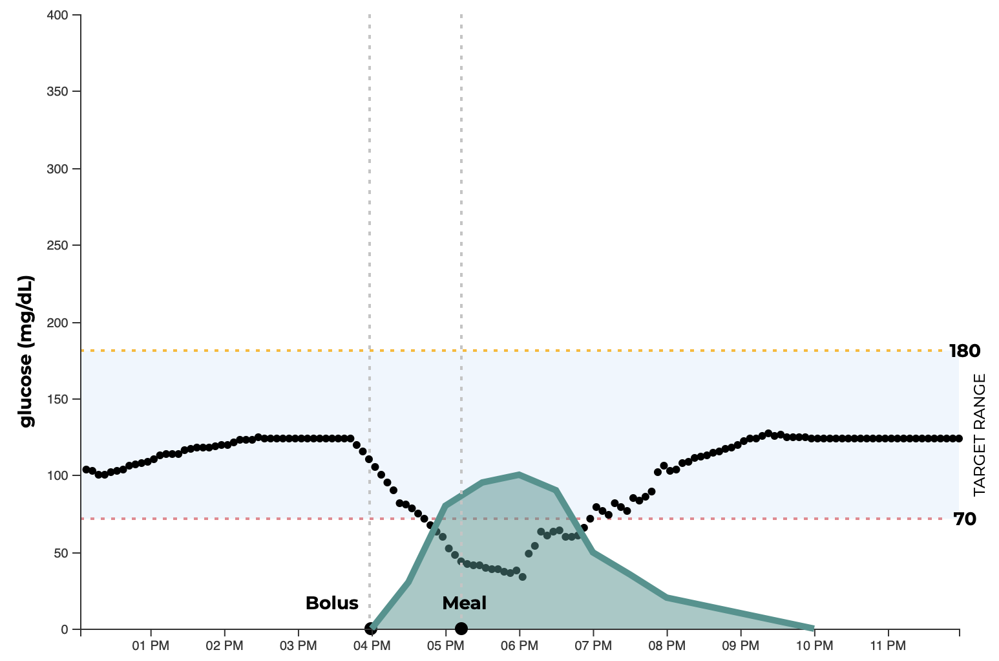

Toggle navigation
InsuLearn
Home
Learn More
Insulin Timing
Nutrition
About
Diabetes is manageable
InsuLearn is an interactive visualization tool that is transforming diabetes education.
Insulin Timing and Dosing
Understanding the relationship between
insulin
and blood glucose levels is important to diabetes management.
Can we picture how
insulin
affects glucose levels?
Learn More »
Try It Yourself »
Simple and Complex Carbs

Understanding the relationship between
meals
and blood glucose levels is important to diabetes management.
Can we picture how
meals
affects glucose levels?
Learn More »
Try It Yourself »